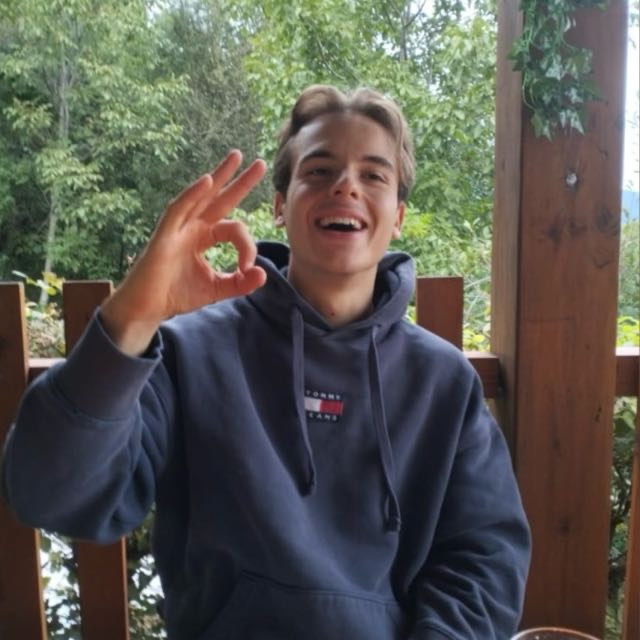
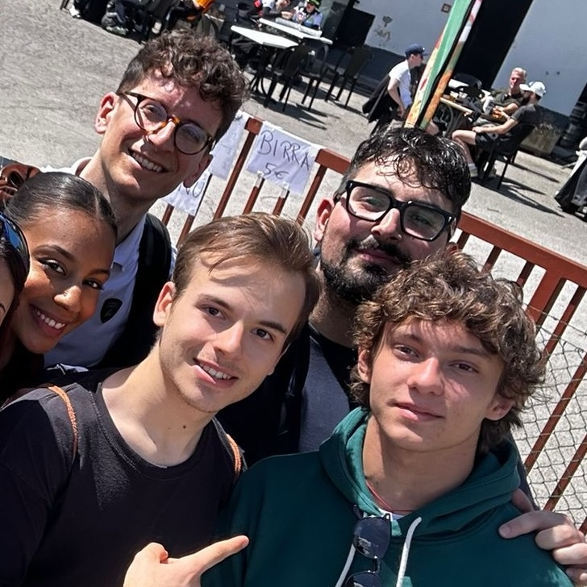
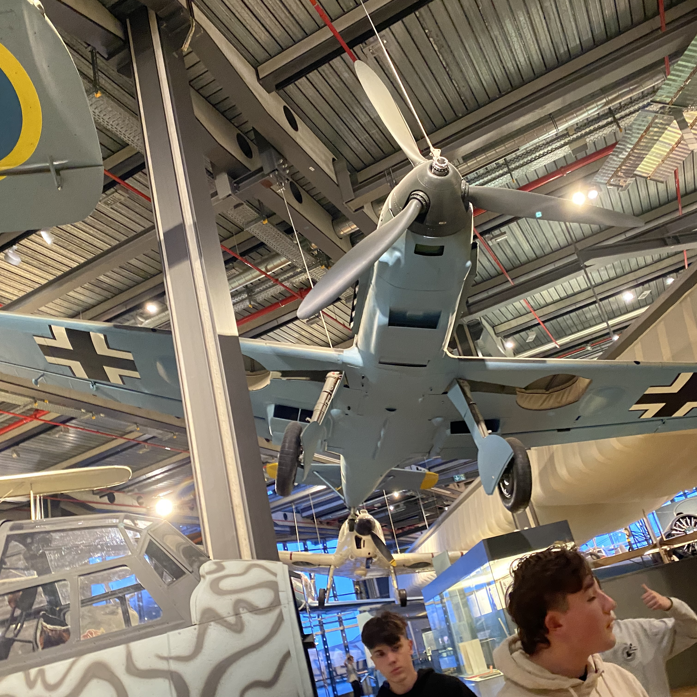
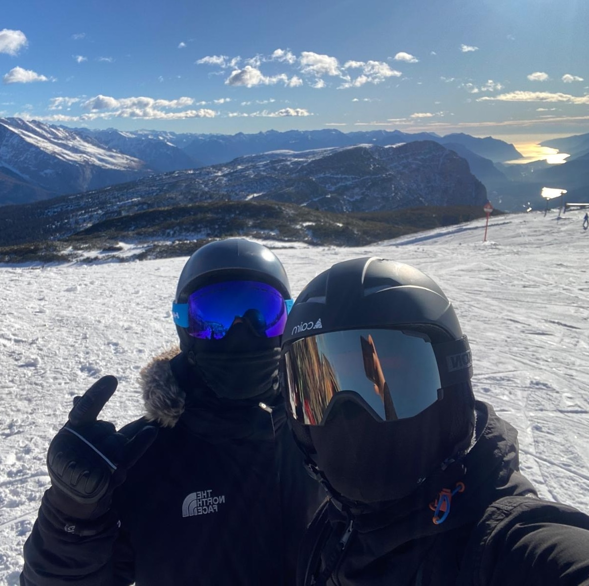

#
About me

Sono nato il 12 dicembre del 2005. Fin da piccolo sono sempre stato appassionato degli sport. Ne ho praticati molti tra cui: pallanuoto, atletica, sci e molti altri.
Crescendo mi sono appassionato all'informatica e col tempo è diventato il mio ambito di studi e il mio lavoro.
Attualmente sono uno studente presso l'univerisità di Trento e sviluppo siti web.
Ho avuto diverse esperienze lavorative, tra cui:
Crescendo mi sono appassionato all'informatica e col tempo è diventato il mio ambito di studi e il mio lavoro.
Attualmente sono uno studente presso l'univerisità di Trento e sviluppo siti web.
Ho avuto diverse esperienze lavorative, tra cui:

Barista
Fullstack Developer
Website developer
#
Studio
Superiori:
Dopo essermi appassionato al mondo dell'informatica ho scelto di frequentare l'indirizzo Informatica presso ITT G. Chilesotti.
Ho potutto anche partecipare alle olimpiadi di informatica facendo il miglior punteggio dell'istituto.
Ho potutto anche partecipare alle olimpiadi di informatica facendo il miglior punteggio dell'istituto.
Nel 2024 mi sono diplomato con un voto di 86/100.
Univerisità:
Dopo aver essere entrato in graduatoria, a seguito del test d'ingresso, ed essermi diplomato mi sono immatricolato presso l'Univerisità degli studi di trento intraprendendo la facolta Scienze Informatiche.
Attualmente sto frequentando la triennale con l'obiettivo di laurearmi nel minor tempo possibile ed intraprendere un corso magistrale.
#
Lavoro
Barista:
Oliver Pasticceria
Luglio 2024 – ottobre 2024
Preparazione e servizio di caffetteria e prodotti da forno.
Assistenza ai clienti e gestione delle ordinazioni.
Fullstack developer:
4innovation srl
Novembre 2024 - Dicembre 2024
Sviluppo di applicazioni web e software utilizzando C#, SQL e VB.
Realizzazione di soluzioni personalizzate per i clienti.
Progettazione di database e gestione di flussi dati complessi.
Website developer:
Ottobre 2024 – Presente
Creazione e gestione del sito web aziendale, ottimizzando l’interfaccia
utente e la navigazione.
Sviluppo di un sistema di gestione dei contenuti per facilitare
l’aggiornamento e la modifica delle informazioni aziendali.
#
Passioni
Motori:

Fin da piccolo sono appassionato di motorsport e motori. Con il tempo ho avuto l’opportunità di vedere dal vivo alcune gare del WEC, partecipare a fiere di auto d’epoca e assistere a raduni.
Tra le gare a cui ho assistito ci sono la 6H di Monza e la 6H di Imola, dove ho avuto la fortuna di conoscere Kimi Antonelli.
Seguo con grande interesse anche la Formula 1 e la MotoGP, due competizioni che mi affascinano per il livello tecnologico estremo raggiunto.
Tra le gare a cui ho assistito ci sono la 6H di Monza e la 6H di Imola, dove ho avuto la fortuna di conoscere Kimi Antonelli.
Seguo con grande interesse anche la Formula 1 e la MotoGP, due competizioni che mi affascinano per il livello tecnologico estremo raggiunto.
Tecnologia:

Oltre al mondo dei motori, ho una grande passione per la tecnologia, sia in ambito informatico che nell’innovazione generale, comprese le tecnologie applicate al settore militare.
Questa curiosità mi ha portato a visitare diversi musei dedicati alla scienza e alla tecnica, tra cui il Museo della Tecnica di Berlino, dove ho potuto approfondire molte delle invenzioni e delle evoluzioni che hanno segnato la storia.
Questa curiosità mi ha portato a visitare diversi musei dedicati alla scienza e alla tecnica, tra cui il Museo della Tecnica di Berlino, dove ho potuto approfondire molte delle invenzioni e delle evoluzioni che hanno segnato la storia.
Sport:

Amo anche lo sport e nel corso degli anni ho praticato diverse discipline, tra cui atletica e pallamano.
In passato giocavo anche a pallanuoto, ma ho dovuto abbandonarla dopo essermi trasferito a Trento.
Ora mi alleno regolarmente in palestra e, vivendo in Trentino, ho iniziato a sciare, scoprendo una nuova passione per la montagna e per lo sci.
In passato giocavo anche a pallanuoto, ma ho dovuto abbandonarla dopo essermi trasferito a Trento.
Ora mi alleno regolarmente in palestra e, vivendo in Trentino, ho iniziato a sciare, scoprendo una nuova passione per la montagna e per lo sci.
#
Contatti